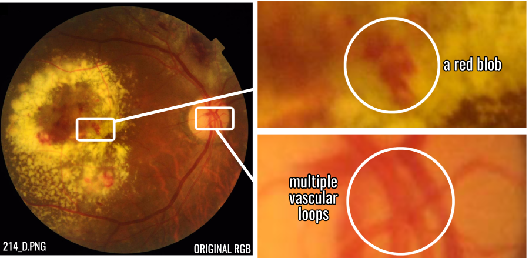
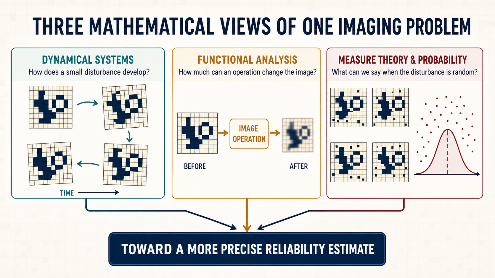
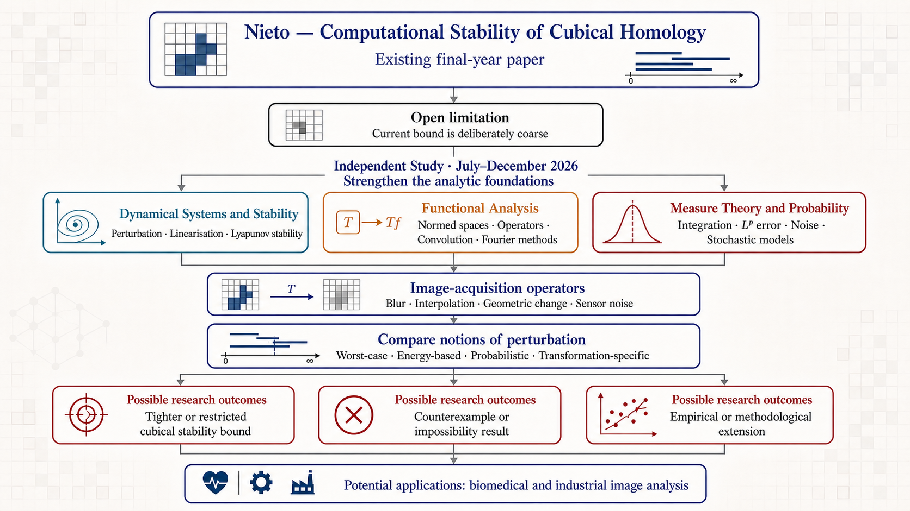

Current Research
Mathematical foundations for reliable image analysis
From July to December 2026, I am spending 20 weeks studying dynamical systems, functional analysis, and measure theory and probability. This is independent study, organised around a research problem rather than three separate textbook courses.
I have found that I learn mathematics most effectively when abstract ideas serve a concrete task. The programme is designed accordingly: each strand must help clarify a real problem, sharpen an argument, or show why a proposed approach cannot work.
The problem is easy to state. An imaging system never produces a perfect copy of its subject. An image may be blurred, rotated, resized, poorly exposed, or corrupted by sensor noise. I want to understand how those changes affect the structural information that a computer extracts from the image, and whether the resulting pattern can tell us something about what went wrong during acquisition.
Part of this work uses topological data analysis. In this setting, topology provides ways to describe features such as connected regions and loops, and persistent homology records how those features appear and disappear as an image is examined at different thresholds. The underlying mathematics is precise; the practical question is whether these summaries remain reliable when the image does not.
Digital images have a natural cubical structure: pixels and voxels lie on a regular grid. Cubical and simplicial homology are related ways of representing the topology of that structure, rather than one being a subset of the other. Under suitable constructions, a compatible triangulation can relate the two representations while preserving the topology under study. My interest is in whether working directly with the cubical structure can tell us more about the stability of measurements made from digital images.
Connection to my earlier research
My interest in retinal imaging has a personal origin in an experience with diabetic retinopathy. It led me to take a particular interest in the reliability of retinal-image analysis.

214_D from the FIVES fundus-image dataset; reused and adapted under CC BY 4.0.
How the project changed direction
My original intention was to produce a topology-informed classifier for diabetic retinopathy. Classifiers of this kind already existed, but reproducing and extending established work would still have been a useful objective for a four-month undergraduate project.
The direction changed during ablation testing, when I deliberately subjected the images to individual forms of degradation. A simulated rotation of roughly three degrees was enough to drive the selected topology-based classifier close to chance performance. That raised a practical question: what value would the classifier have if a slight change in the subject’s head alignment could cause it to fail? The topological vectors were highly sensitive to rotation and other mechanical changes that required the image to be resampled. Interpolation on the pixel grid could create or destroy topological features even when the underlying subject had changed very little. My undergraduate thesis described this behaviour as grid shattering.
Once the ablation tests exposed this limitation, the project changed direction. Instead of treating the result as an inconvenience to the proposed classifier, I made it part of the research question and asked whether the contrasting failure behaviour could itself be useful.
The same topological summaries were comparatively robust under several photometric changes, including exposure drift and quantisation, although not under every form of noise. Log-transformed Hu moments, which are geometric descriptors based on an image’s overall shape, showed a broadly reverse profile: they were comparatively strong under mechanical transformations but weaker under changes in intensity. Instead of asking either representation to serve as the classifier by itself, I treated them as two complementary, or “orthogonal”, controls.
Their contrasting failure profiles became the Differential Failure Matrix. It was designed to test whether signatures associated with alignment and resampling could be distinguished from signatures associated with radiometric degradation. The final project was therefore not the classifier I had originally planned. It treated an apparent weakness of the cubical-persistence pipeline as a possible signal for a coarse fault-isolation heuristic. The code and supporting material are available in the project’s GitHub repository.
Why I am returning to it
The thesis was completed over four months. That was enough to establish and test the framework, but not to exhaust the questions it raised. The decomposition was descriptive and produced a suggestive empirical pattern, but it was mathematically coarse: its stability bound was conservative, and the final fault-isolation stage necessarily relied in part on empirical thresholds and heuristics. Time did not permit a deeper investigation of those mechanisms.
In a biomedical setting, a promising experimental result is not enough. The intended use, assumptions, limitations, performance, and possible failure modes of a method must be described and validated. My purpose in returning to the mathematics is to understand the underlying mechanisms more fully and to determine whether the heuristic parts of the pipeline can be replaced, constrained, or justified by stronger mathematical and empirical support. The longer-term aim is a pipeline whose assumptions and failure modes are more transparent and therefore easier to examine in technical and regulatory review. This is not a claim that the present work is a clinically validated or regulator-approved system.
Retinal imaging remains the immediate problem, and similar acquisition issues arise in industrial inspection and other computer-vision systems. My earlier experiments were confined to retinal images, so industrial applications remain a direction for further work.
The project provides the immediate mission, but it does not limit what I may learn from it. The mathematics may lead into other areas of computer vision, machine learning, and the use of topological data analysis on non-image data after it has been given a suitable geometric representation. Any such embedding would need to preserve the structure relevant to the problem. These possibilities remain exploratory and are not claims of the present study programme.
The study programme
At a non-technical level, the three subjects approach different parts of the same problem. Dynamical systems describes how disturbances develop, functional analysis examines how operations change an image, and measure theory and probability provide ways to reason about random noise and uncertainty.


Dynamical systems
Dynamical systems studies change: how a system evolves, what states remain steady, and how its behaviour responds to a small disturbance. I am working through ordinary differential equations, equilibria, linearisation, parameter dependence, perturbation, and stability.
This subject gives me a firmer language for reasoning about stability. It also lays groundwork for later study of learning dynamics and state-space models, although I do not assume that every part of it will be needed for the present image-analysis problem.
Functional analysis
Functional analysis studies spaces of functions and the operations that act on them. This is useful in imaging because blur, filtering, and convolution can be treated as mathematical operators rather than as a loose collection of software effects.
My current work includes normed and Banach spaces, bounded linear operators, operator norms, differentiation, and Hilbert spaces. These ideas help turn questions such as “How much did this operation change the image?” into statements that can be defined and tested carefully.
Measure theory and probability
Measure theory supplies a rigorous basis for integration, probability, and different ways of measuring error. I am studying measurable functions, Lebesgue integration, convergence, expectation, \(L^p\) spaces, product measures, and stochastic models.
This strand matters when degradation is random rather than fixed. It provides tools for describing sensor noise, combining more than one source of uncertainty, and asking what can be said on average or with a stated probability.
How I am approaching the work
Persistent homology already has a substantial stability theory: in broad terms, a small change in the function used to examine an image leads to a controlled change in its persistence diagram. This general result is important, but it does not by itself explain every practical failure in an image-analysis pipeline. Existing research has also shown that robustness on greyscale images depends on the chosen filtration, persistence summary, and form of disturbance. For example, a broad experimental study by Turkeš and colleagues examined several filtrations and summaries under affine, photometric, and noise perturbations on handwritten digits.
That work establishes important context, but it does not derive a tighter bound for the particular sequence that concerns me: a geometric transformation represented on a sampled pixel grid, followed by a cubical filtration and its persistence diagram. The computational bound used in my thesis was deliberately coarse. Global estimates of displacement and intensity variation can give a large upper bound even when the measured topological change is small.
I am investigating whether the regular cubical grid, local image structure, and the properties of a specified sampling or acquisition process can support tighter or more informative bounds under explicit assumptions. A related question is whether the contrasting responses of topological and geometric measurements can identify the likely source of a failure, rather than merely showing that performance has deteriorated.
A more immediate extension is to replace the signed logarithmic transformation applied to the Hu moments with a compression that has an explicit Lipschitz bound. This would not necessarily make the Differential Failure Matrix more effective. Its value would be cleaner stability accounting: under stated assumptions, both branches of the pipeline could be analysed using explicit continuity bounds, making it clearer where empirical thresholds and other assumptions still enter.
The aim is not to restate the general stability theorem in cubical language, and I am not claiming that either question is novel before the relevant literature has been examined in full.
The eventual result may be a theorem with restricted assumptions, an example showing that a proposed bound cannot hold, a probabilistic reformulation, or a careful computational study. A negative result is useful if it explains why an apparently reasonable idea fails.
These studies are still in progress. I may add public notes later, once there is enough material to be useful to another reader.